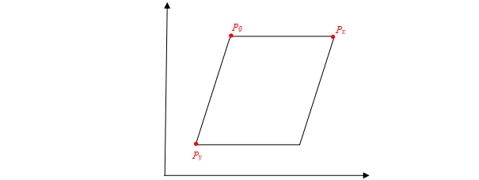
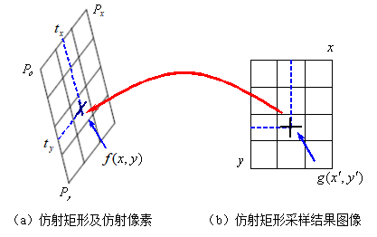
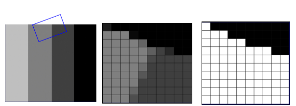
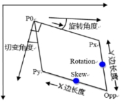

Công cụ lấy mẫu affine chủ yếu thực hiện việc lấy mẫu hình ảnh trong vùng hình chữ nhật affine từ ảnh đầu vào và xuất ra ảnh hình chữ nhật, giúp xử lý các bước tiếp theo. Hình dưới đây là ví dụ về hiệu chỉnh xoay bằng công cụ lấy mẫu hình chữ nhật affine. Ngoài ra, công cụ còn có thể dùng để hiệu chỉnh tỷ lệ và méo hình.
| Phân loại | Tên tham số | Mô tả tham số |
|---|---|---|
| Cửa sổ thuộc tính | Hình dạng ROI | Có thể chọn toàn bộ ảnh hoặc hình chữ nhật affine. |
| Chiều dài mẫu theo X/Y | Khi chọn toàn bộ ảnh làm ROI, cần thiết lập chiều dài mẫu theo phương ngang và dọc. | |
| Hình chữ nhật affine | Khi chọn ROI là hình chữ nhật affine, sẽ hiển thị thiết lập của hình chữ nhật affine.  |
|
| Center (X/Y) | Tọa độ tâm của hình chữ nhật affine. | |
| Size (SizeX/SizeY) | Chiều dài và rộng của hình chữ nhật affine. | |
| Rotation | Góc xoay của hình chữ nhật affine. | |
| Skew | Góc nghiêng (shear) của hình chữ nhật affine. | |
| ROI hình đa giác | Khi chọn ROI là hình đa giác, sẽ hiển thị thiết lập của hình đa giác. Do chỉ hỗ trợ tứ giác nên ROI hiển thị là hình chữ nhật. | |
| Số đỉnh (VerticesNum) | Số lượng đỉnh, chỉ có thể là 4. | |
| Các đỉnh (Vertices) | Tọa độ các đỉnh của ROI. | |
| Ảnh màu hay không | Cho biết ảnh đầu vào có phải là ảnh màu hay không. | |
| Cửa sổ hình ảnh | Ảnh đầu vào | Ảnh cần thực hiện lấy mẫu affine. |
| GUI hình chữ nhật affine | Dùng để thiết lập hình chữ nhật affine. | |
| ROI hình đa giác | Dùng để thiết lập hình tứ giác. | |
| Chuỗi dữ liệu | Ảnh đầu vào | Ảnh cần thực hiện lấy mẫu affine. |
| Biến đổi tuyến tính 2D | Biến đổi tuyến tính 2 chiều là sự dịch chuyển, xoay và thu phóng của mục tiêu so với mẫu gốc. Mảng biến đổi tuyến tính 2D là tập hợp tất cả các phép biến đổi này sau mỗi lần công cụ thực thi. | |
| Giao diện nâng cao | Không có | Không có |
| Phân loại | Tên tham số | Mô tả tham số |
|---|---|---|
| Cửa sổ giám sát | Ảnh đầu vào | Ảnh cần thực hiện lấy mẫu affine. |
| Ảnh đầu ra | Ảnh sau khi thực hiện lấy mẫu affine. | |
| Kết quả thực thi | Kết quả thực hiện của công cụ. | |
| Thời gian thực thi | Thời gian công cụ thực hiện. | |
| Cửa sổ ảnh | Ảnh đầu ra | Ảnh sau khi thực hiện lấy mẫu affine. |
| Kết quả thực thi | Hiển thị kết quả thực thi của công cụ, "OK" nếu thành công, "NG" nếu thất bại. Giống với tham số kết quả trong cửa sổ giám sát. | |
| Chuỗi dữ liệu | Ảnh đầu vào | Ảnh cần thực hiện lấy mẫu affine. |
| Ảnh đầu ra | Ảnh sau khi thực hiện lấy mẫu affine. | |
| Ảnh màu đầu ra | Ảnh màu sau khi thực hiện lấy mẫu affine. |
Hình chữ nhật affine được xác định theo phương pháp ba đỉnh. Bằng cách xác định ba đỉnh của hình chữ nhật affine là Po, Px, và Py, có thể xác định hoàn toàn hình chữ nhật affine, như minh họa trong Hình 2:

Dựa vào số điểm lấy mẫu theo hướng Po - Px và Po - Py, hình chữ nhật affine có thể được chia thành các điểm ảnh affine có diện tích bằng nhau. Nếu số điểm lấy mẫu theo hai hướng đó lần lượt là x_divisions và y_divisions, thì ảnh kết quả sẽ có số cột và hàng tương ứng. Với tọa độ ảnh đầu ra (x’, y’), có thể ánh xạ ngược lại để tính tọa độ tương ứng (x, y) trong không gian ảnh đầu vào.

Thông qua tọa độ (x, y) trong không gian ảnh đầu vào, có thể xác định mức xám của điểm ảnh bằng phương pháp nội suy. Công cụ lấy mẫu affine sử dụng **nội suy song tuyến tính (bilinear interpolation)** để đảm bảo cả độ chính xác lẫn hiệu suất.
Trong thực tế, khi áp dụng hình chữ nhật affine để lấy mẫu từ ảnh đầu vào, có thể xảy ra hiện tượng **cắt xén (clipping)** nếu vùng affine vượt ra ngoài biên ảnh, như trong Hình 4(a). Ngay cả khi điểm ảnh nằm sát biên (ví dụ giữa hai pixel rìa), cũng được coi là bị cắt xén, như trong Hình 4(b).

Chiến lược xử lý phần bị cắt là: gán giá trị bằng 0 cho vùng đó và tạo ra một ảnh trọng số có cùng kích thước với ảnh sau khi lấy mẫu, để chỉ trạng thái điểm ảnh. Trong ảnh trọng số, "0" biểu thị điểm bị cắt, "1" biểu thị điểm hợp lệ. Xem Hình 5.

Hình chữ nhật affine

Không có
参见“\Sample\仿射采样工具.gvp”。